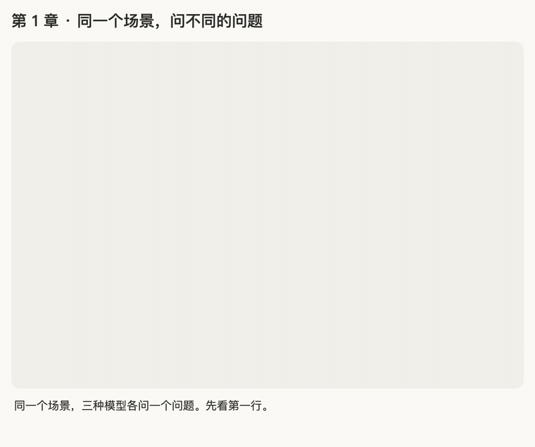
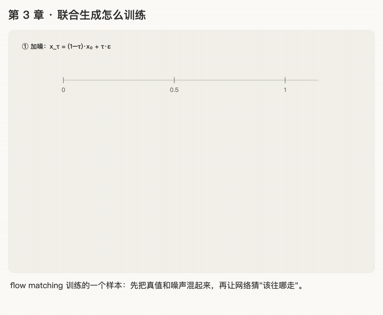
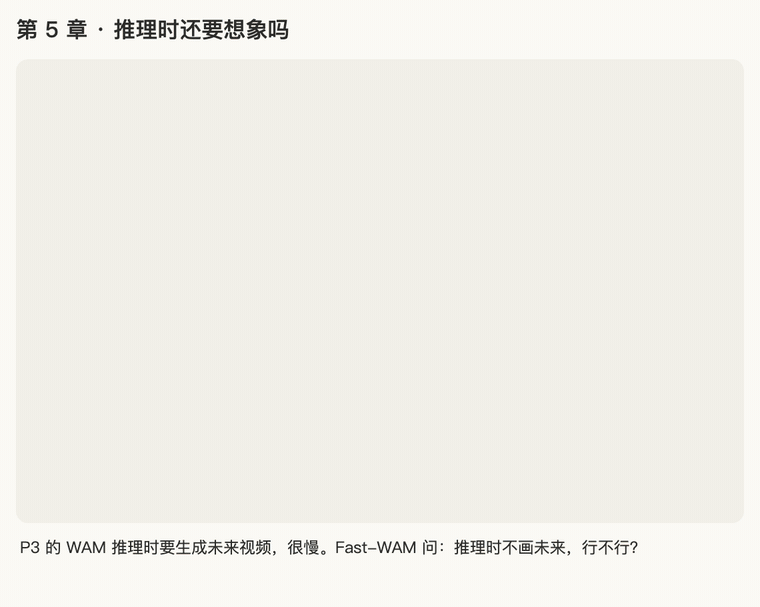
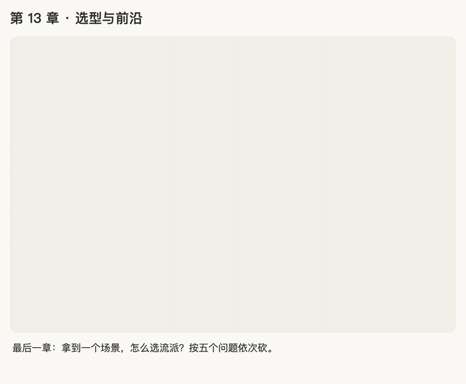

世界模型与 WAM 流派
世界模型回答「做了会怎样」，世界动作模型（WAM）回答「该做什么」。从这两个问题讲起，走过联合生成的训练和推理、2026 年下半年的新进展（推理时不想象、慢想象快动作、长上下文、开源模型与榜单），最后把各流派放到一张地图上，落到选型。共 13 章，每章配动画。
每章的结构：本章回答的问题 → 讲解（白话类比 → 公式 → 例子）→ 练习与作答记录 → 口诀 → 复习卡片 → 延伸阅读。
怎么看
- 讲义：每章正文里嵌着 GIF 动画，打开就能播放。
- 可交互动画：章节标题下的"打开本章可交互动画"，或点下面的卡片进入讲义后再打开。按钮：▶ 播放自动演示，→ 单步自己控制节奏，↺ 从头开始；有滑块的可以拖动参数。
- 复习卡片：先看问题自己答，再点开折叠的答案核对。
全部章节

第 1 章两个问题：做了会怎样 vs 该做什么 第 2 章加噪还是不加噪：一个网络当四种角色
第 2 章加噪还是不加噪：一个网络当四种角色
第 3 章联合生成怎么训练：一个 loss、一个权重、一张时间表 第 4 章联合生成怎么推理：少走几步、丢掉视频、用现实重新锚定
第 4 章联合生成怎么推理：少走几步、丢掉视频、用现实重新锚定
第 5 章推理时还要想象吗：训练时想象，推理时不想象 第 6 章慢想象、快动作：视频低频、动作高频
第 6 章慢想象、快动作：视频低频、动作高频 第 7 章记得更久：从 6 秒到 19 秒的上下文
第 7 章记得更久：从 6 秒到 19 秒的上下文 第 8 章耦合强度这条轴：P1 → P2 → P3 → P4 → 纯 VLA
第 8 章耦合强度这条轴：P1 → P2 → P3 → P4 → 纯 VLA 第 9 章隐动作：用无标签视频的桥
第 9 章隐动作：用无标签视频的桥 第 10 章世界模型五派：在哪个空间预测
第 10 章世界模型五派：在哪个空间预测 第 11 章推理的四种用法：离线想象、在线规划、直接出动作、交互模拟
第 11 章推理的四种用法：离线想象、在线规划、直接出动作、交互模拟 第 12 章2026 年的 WAM 版图：开源模型和榜单
第 12 章2026 年的 WAM 版图：开源模型和榜单
第 13 章选型与前沿：场景 → 流派，以及还没解决的问题